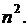

Дайте развернутый ответ.
На доске записано 10 натуральных чисел, среди которых нет одинаковых. Оказалось, что среднее арифметическое любых трёх или пяти чисел
из записанных является целым числом.
а) Могут ли среди записанных на доске чисел одновременно быть числа 305 и 1511?
б) Может ли одно из записанных на доске чисел быть квадратом другого, если среди записанных на доске чисел есть число 305?
в) Известно, что среди записанных на доске чисел есть число и его квадрат 